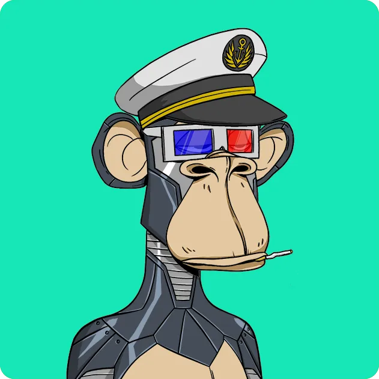
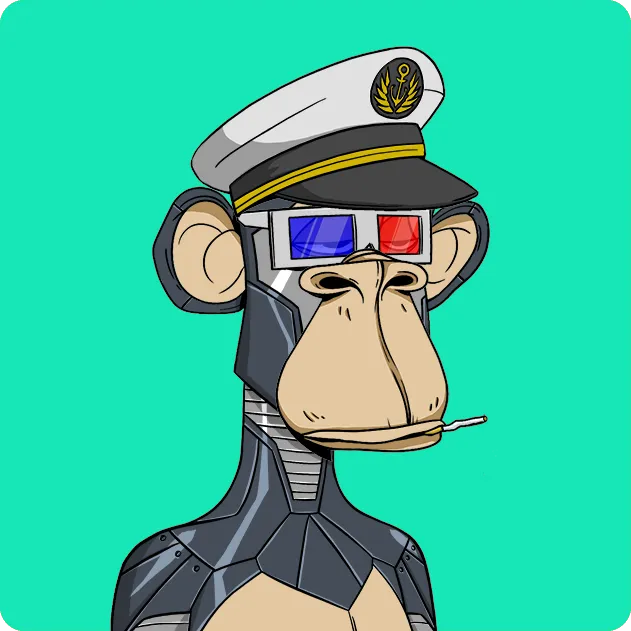

BIENVENIDOS AL CLUB NAUTICO BORED APE
BAYC es una colección de 10 000 NFT de Bored Ape: coleccionables digitales únicos que viven en la cadena de bloques de Ethereum. Su Bored Ape funciona como su tarjeta de membresía del Yacht Club y otorga acceso a beneficios exclusivos para miembros, el primero de los cuales es el acceso a THE BATHROOM, un tablero de graffiti colaborativo. La comunidad puede desbloquear áreas y ventajas futuras a través de la activación de la hoja de ruta.
EL EQUIPO
BAYC fue creado por cuatro amigos que se propusieron hacer monos tontos, probar nuestras habilidades e intentar construir algo (ridículo).
GARGAMEL.OBSESIONADO CON STARCRAFT. COME PITUFOS.
GORDON GONER. ADICTO AL APALANCAMIENTO REFORMADO.
KETCHUP DE TOMATE EMPERADOR. GASTARON TODO SU DINERO EN PRIMERAS IMPRESIONES Y PET-NAT.
SIN CASTIGO. AQUÍ PARA LOS SIMIOS. NO PARA EL SASS.


 

ACTIVACIONES DE HOJA DE RUTA
Estamos en esto a largo plazo.
Hemos establecido algunos postes de la portería para nosotros mismos. Una vez que alcancemos un porcentaje de venta objetivo, comenzaremos a trabajar para lograr el objetivo establecido.
- 10%
- 20%
- 40%
- 60%
- 80%
- 90%
- 100%
- Pagamos a nuestras madres.
- Liberamos a los simios enjaulados. 5 simios enjaulados (tokens retenidos de la venta) se lanzan desde el aire a poseedores de simios aleatorios.
- BAYC tiene su propio canal de YouTube, BAYC LoFi Radio - Beats to Ape into Shitcoins To.
- La tienda BAYC Merch Store exclusiva para miembros se desbloquea, con camisetas, sudaderas con capucha y otros obsequios de edición limitada.
- La imagen de la casa club se vuelve interactiva y la Nota Misteriosa se vuelve legible, comenzando una búsqueda del tesoro. El primero en resolver el misterio será recompensado con 5 ETH y un mono aburrido.
- Se inicia el grupo de liquidez de Bored Ape.
- La máquina recreativa Mutant Ape (NFT Breeding) se arregla. Y cocinamos nuevas formas de imitar con nuestros amigos.